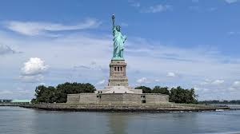
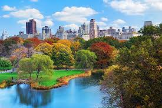
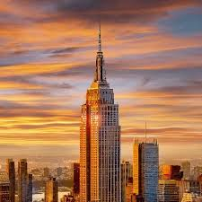

New York City (NYC), often called simply New York, is the most populous city in the United States.The home of the headquarters of the United Nations, New York is an important center for international diplomacy, and has been described as the cultural capital of the world.Its a concrete jungle and there are many amazing places to visit.Its the city with largest number of billionares present. New york is known for its amazing food and the unmissable tourist spots.
America's most iconic sight, the Statue of Liberty is at the top of every first-time visitor's list of things to do in New York. It was France's gift to America. Built in 1886, it remains a world symbol of freedom and is one of the top attractions in America.
Walk, peddle, or carriage ride through the crisscrossing pathways of Central Park is a must-do on anyone's New York City itinerary. In winter, you can even lace up your skates and glide across Wollman Rink. This huge park in the city center, a half-mile wide and 2.5 miles long, is one of the things that makes New York such a beautiful and livable city.
The Empire State Building is one of New York's most famous landmark buildings and key tourist attractions. The 381-meter-tall, 102-storey building was the tallest in the world until the 1 World Trade Center tower rose higher, 41 years later. Topped with a mooring mast for airships, the Empire State Building immediately became a landmark and a symbol for NYC when it opened in 1931.
